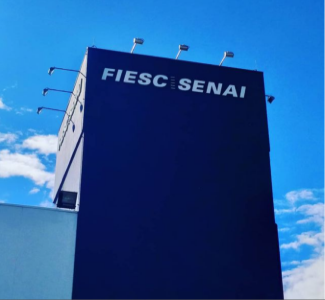
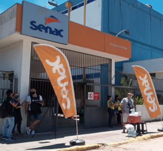

De 2019 à 2021 estudei no Senai de São José, cursando o ensino médio integrado com o técnico de
desenvolvimento de sistemas.
Além das áreas padrão do EM (Linguagens, Ciências da Natureza, Ciências Humanas e Matemática), existia a
area técnica,
introduzida como uma matéria adicional. No primeiro ano tivemos introdução à algoritimos e sistemas
lógicos, com um pouco de JS introduzido no HTML.
No segundo ano fomos apresentados ao Java Descktop e as interfaces gráficas, lógica matemática,
estruturas padrão de repetição condicionais, além de hierarquias.
O terceiro ano aperfeiçoou as lógicas e macânicas junto do desenvolvimento mobile pelo Android, onde
desenvolvemos o Without Waste presente em PROJETOS.


Curso Jovem Programador
Em meados de 2021 iniciei o primeiro módulo do curso Jovem Programador do Senac.
Consistia em um WorkShop de 8 horas de carga horária de introdução ao mundo da tecnologia e programação.
Houve uma seleção para o segundo módulo, de Desenvolvimento de Sistemas, na qual eu passei. Nesse módulo
houve,
para mim, uma redundante introdução à algoritimos e sistemas lógicos, com Java Descktop e as interfaces
gráficas,
lógica matemática, estruturas padrão de repetição condicionais e hierarquias... Desenvolvemos, em
equipe,
um sistema de cadastro de passagens aéreas. Porém, só funciona em execução pelo IDE. O segundo módulo
rendeu um certificado técnico,
como desenvolvedor de sistemas. Fazendo de mim, portanto, duas vezes técnico em desenvolvimento de
sistemas. O terceiro módulo,
que ainda estou cursando, é de desenvolvimento web, do qual esse site faz parte.
Cursos Off-Grade
Além de cursos certificados, fiz alguns cursos introdutórios e iniciais. Para exemplificar,
não são cursos que eu colocaria em currículo como formação, mas foram importantes para me guiar em meus
estudos.
Entre esses cursos, posso citar robótica, que fiz durante um trimestre como contraturno no senai, em
2019,
do qual aprendi a base da eletrônica e programação em C#, pelo Arduino. Além disso algumas imersões da
Alura,
como a Imersão DEV WEB, onde vi HTML, CSS e JS, em outubro de 2020; ou a imersão DEV VENON, com
introdução à Python.